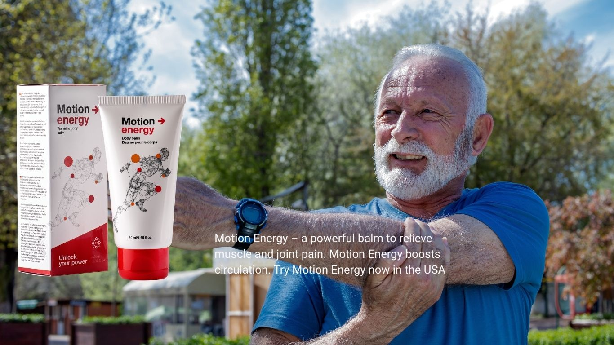

For adults over 40 in the USA, maintaining mobility and comfort is essential for an active and fulfilling life. Motion Energy Body Balm is a revolutionary product designed to address the challenges of joint stiffness, muscle soreness, and general discomfort that often come with age. Whether you’re a busy professional, an active retiree, or someone managing chronic pain, this balm offers a natural, effective solution to keep you moving with ease.
Unlike oral pain relievers that may cause side effects like stomach upset or drowsiness, Motion Energy Body Balm provides targeted relief directly to the affected area. Its non-greasy, fast-absorbing formula makes it ideal for daily use, whether you’re preparing for a morning jog, recovering from a long day, or simply seeking relief from everyday aches. The balm penetrates deeply to soothe joints and muscles, helping you regain the freedom to enjoy your favorite activities without discomfort.
What sets Motion Energy apart from other topical pain relief products? It’s the combination of scientifically backed ingredients, a user-friendly application, and a commitment to quality that makes it a trusted choice for thousands of Americans. The balm is formulated to deliver fast-acting relief without leaving a sticky residue, making it perfect for those with active lifestyles.
Whether you’re dealing with occasional soreness from gardening, hiking, or playing with grandkids, or managing chronic conditions like arthritis, Motion Energy Body Balm is your go-to solution. Its portable packaging makes it easy to carry in your bag, so you’re always prepared, whether at home, the gym, or on vacation. Visit our website to explore how Motion Energy can transform your daily mobility.
For those over 40, staying active is key to maintaining physical and mental well-being. However, joint and muscle discomfort can make even simple tasks feel daunting. Motion Energy Body Balm empowers you to live life on your terms. Imagine being able to enjoy a round of golf, a yoga class, or a walk in the park without worrying about pain holding you back. This balm is designed to support your active lifestyle, helping you stay engaged in the activities you love.
Users across the USA have shared stories of how Motion Energy has made a difference in their lives. From retirees rediscovering their passion for outdoor adventures to professionals managing the physical demands of their jobs, this balm has become a staple in their daily routines. Its versatility makes it suitable for a wide range of needs, from post-workout recovery to soothing chronic joint pain caused by conditions like osteoarthritis.
Ready to experience the difference for yourself? Order Motion Energy Body Balm today and take the first step toward a more comfortable, active life. With a satisfaction guarantee and easy online ordering, there’s no reason to let joint or muscle discomfort slow you down.
The secret to Motion Energy Body Balm’s effectiveness lies in its carefully curated blend of natural ingredients. Each component is selected for its ability to target inflammation, improve circulation, and promote muscle and joint recovery. This makes the balm an ideal choice for adults over 40 in the USA who are seeking a safe, non-invasive way to manage discomfort and stay active.
Motion Energy Body Balm combines time-tested natural extracts with modern science to deliver powerful results. Here are some of the key ingredients that make this product so effective:
These ingredients work together to penetrate deep into the skin, targeting the root causes of discomfort rather than just masking symptoms. Unlike other topical products that may rely on harsh chemicals, Motion Energy Body Balm is formulated with natural extracts, making it safe for long-term use. This is especially important for adults over 40, who may be more sensitive to synthetic ingredients or concerned about the side effects of frequent medication use.
Aging doesn’t have to mean slowing down. Motion Energy Body Balm is designed to support long-term joint and muscle health, helping you maintain an active lifestyle well into your 40s, 50s, and beyond. By reducing inflammation and improving circulation, the balm helps prevent the buildup of tension that can lead to chronic pain. Regular use can also improve flexibility, making it easier to perform daily tasks like climbing stairs, gardening, or carrying groceries.
For those with conditions like arthritis or tendonitis, Motion Energy Body Balm offers a complementary approach to traditional treatments. It can be used alongside physical therapy or exercise regimens to enhance recovery and reduce discomfort. The balm’s ability to soothe sore muscles after physical activity also makes it a favorite among those who enjoy sports, fitness classes, or outdoor hobbies.
Incorporating Motion Energy Body Balm into your routine is simple and convenient. Follow these steps for optimal results:
The balm’s lightweight formula makes it easy to apply without leaving a greasy residue, so you can use it before heading to work, after a workout, or even before bed for overnight relief. Its compact packaging is perfect for travel, ensuring you’re never without your trusted pain relief companion. Whether you’re managing occasional soreness or chronic joint issues, Motion Energy Body Balm is designed to fit seamlessly into your life.
Motion Energy Body Balm is tailored for adults over 40 in the USA, but its benefits extend to a wide range of users. Here are just a few examples of who can benefit:
No matter your lifestyle, Motion Energy Body Balm is here to help you move better, feel better, and live better. With its proven formula and easy application, it’s no wonder why so many Americans trust Motion Energy for their joint and muscle relief needs. Don’t let discomfort hold you back—visit our website to order your Motion Energy Body Balm today and start experiencing the freedom of pain-free movement.
Join countless others who rely on Motion Energy for a comfortable, active lifestyle. Order now and experience the power of motion energy!
Order Now